Data & AI —
bắt đầu từ đâu?
Ngành này làm gì, cần học gì, và đi làm thật sự trông như thế nào — trả lời từ chính câu hỏi của các bạn.
- Efficient Circuit Classifier Design for Enhancing Quantum Self-Attention in Vision TransformersIEEE Globecom Workshops
- Comparative Analysis of Deep Learning Architectures for Brain Tumor SegmentationInt. Conf. on Advanced Technologies for Communications (ATC)
Hôm nay mình đi qua
Case study:
khảo sát của các bạn
Buổi chia sẻ này chính là một dự án dữ liệu nhỏ. Cùng xem nó được làm từ đầu đến cuối như thế nào.
Một dự án dữ liệu end-to-end
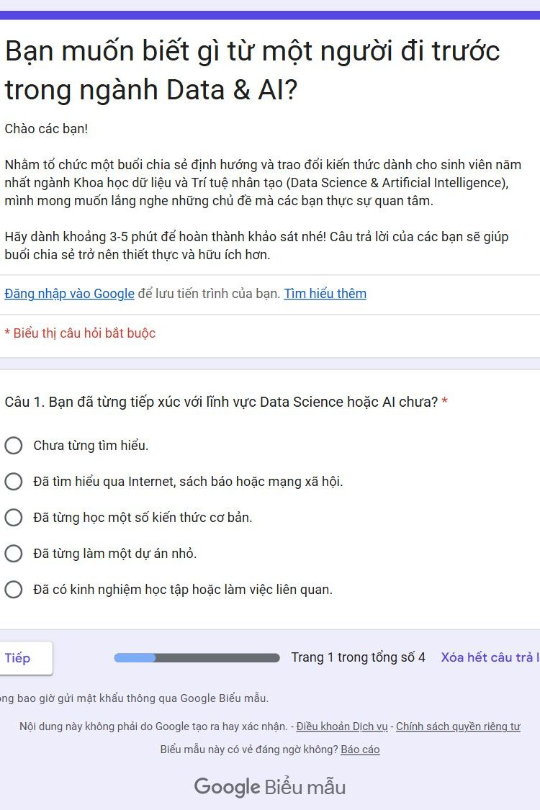
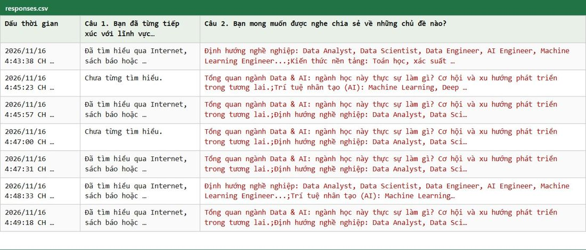
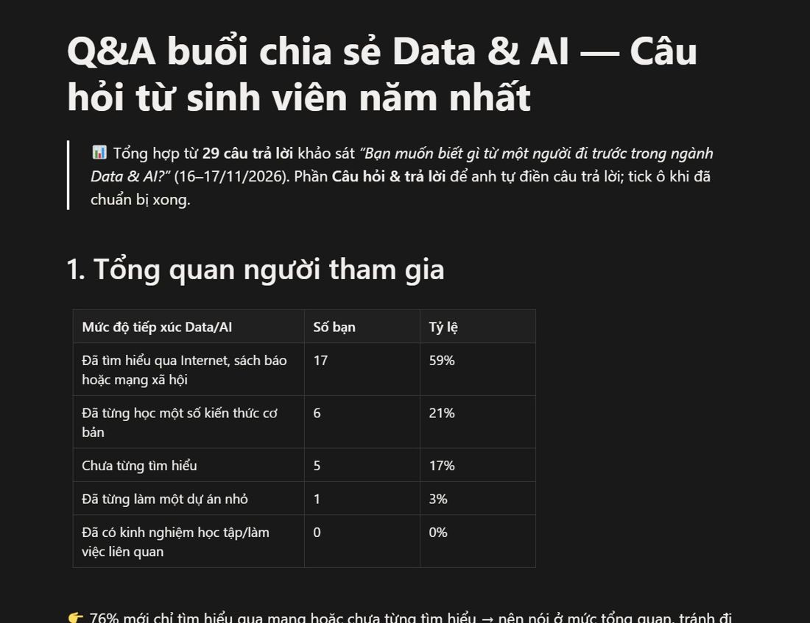
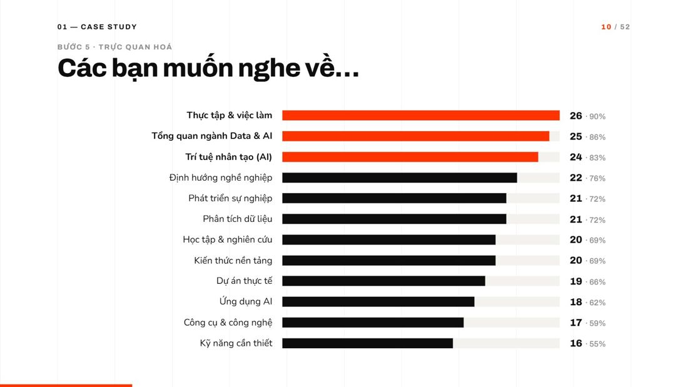
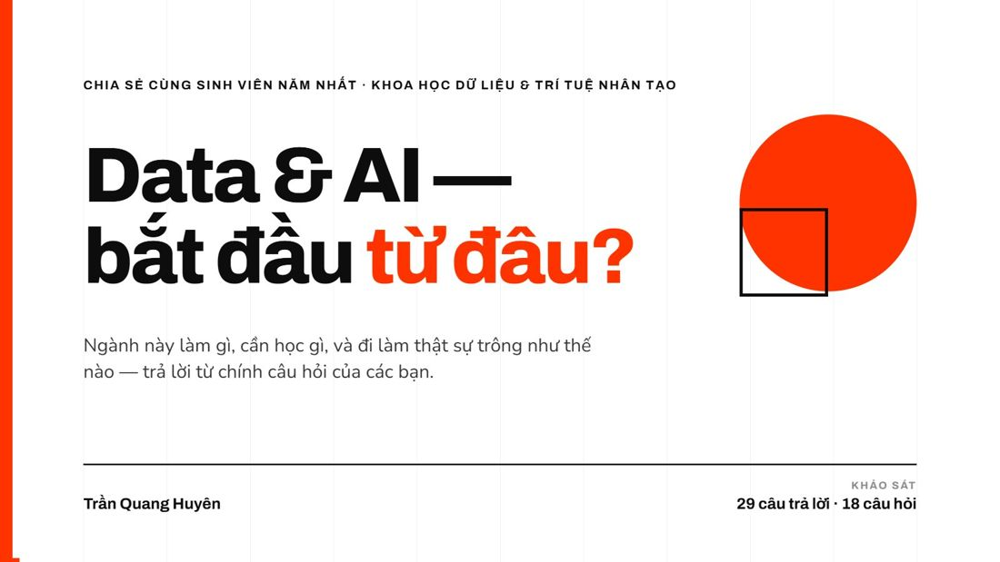
Đặt câu hỏi
Bắt đầu từ vấn đề cần giải quyết — không phải từ dữ liệu.
- Vấn đề: 1 buổi chia sẻ, thời gian có hạn, rất nhiều chủ đề có thể nói
- Câu hỏi: các bạn thực sự cần nghe gì nhất?
- Thành công khi: câu hỏi thật của các bạn được trả lời
Thu thập dữ liệu
Thiết kế form cũng là thiết kế dữ liệu.
- Ẩn danh, không bắt buộc tên → các bạn trả lời thật hơn
- Trắc nghiệm để đếm được · tự luận để lấy câu hỏi thật
- 9 câu, 3–5 phút → nhiều người làm hết
Làm sạch dữ liệu
Dữ liệu thật hiếm khi dùng được ngay.
- Google Forms nối nhiều đáp án bằng dấu phẩy — nhưng chính đáp án cũng chứa dấu phẩy (“Python, SQL, Power BI…”)
- → Không tách bằng dấu phẩy được; phải so khớp với danh sách lựa chọn gốc
- 40+ ý tự luận → gộp thành 18 câu hỏi, chia 4 nhóm
mới chỉ tìm hiểu qua mạng hoặc chưa từng tìm hiểu về Data & AI
Các bạn muốn nghe về…
Điều các bạn đang lo nhất
Sau hôm nay, các bạn muốn…
Từ insight đến nội dung hôm nay
3 bài học từ một dự án rất nhỏ
Tổng quan ngành
Các vị trí nghề nghiệp, thị trường và AI trong thực tế.
AI, ML, DL và Data Science liên quan thế nào?
Phần giao nhau: Data Science dùng ML làm công cụ — nhưng không phải việc Data Science nào cũng là AI.
5 vị trí chính — một dòng chảy dữ liệu
Ngoài ra: BI Analyst · MLOps Engineer · Research Scientist · Data Product Manager…
Data Engineer
Xây “đường ống” để dữ liệu chảy về đúng, đủ, đúng giờ.
- SQL & Python vững
- Cơ sở dữ liệu, mô hình hoá kho dữ liệu
- ETL/ELT & điều phối: Airflow, dbt
- Big data & cloud: Spark, Kafka, AWS/GCP
- Thu thập dữ liệu từ nhiều nguồn: app, web, hệ thống bán hàng
- Làm sạch, chuẩn hoá, đưa vào kho dữ liệu
- Giám sát pipeline: dữ liệu trễ, thiếu, sai thì sửa
Data Analyst
Biến dữ liệu thành câu trả lời cho câu hỏi kinh doanh.
- SQL · Excel / Google Sheets
- Thống kê mô tả & kiểm định
- BI: Power BI, Tableau
- Kể chuyện bằng dữ liệu, hiểu nghiệp vụ
- Nhận câu hỏi từ team kinh doanh, marketing
- Truy vấn, phân tích, tìm nguyên nhân
- Làm dashboard, báo cáo, đề xuất hành động
Data Scientist
Xây mô hình để dự đoán và hỗ trợ ra quyết định.
- Toán: xác suất thống kê, đại số tuyến tính
- Python: pandas, scikit-learn
- Machine Learning & đánh giá mô hình
- Thiết kế thí nghiệm, hiểu nghiệp vụ
- Biến vấn đề kinh doanh thành bài toán dự đoán
- Xử lý dữ liệu, tạo đặc trưng, huấn luyện & đánh giá mô hình
- Giải thích kết quả cho người không chuyên
ML Engineer
Đưa mô hình từ notebook vào sản phẩm chạy thật.
- Lập trình vững: Python, cấu trúc dữ liệu, Git
- ML & Deep Learning: PyTorch
- Backend & API: FastAPI, Docker
- MLOps: triển khai, giám sát, huấn luyện lại
- Đóng gói mô hình thành API — nhanh, ổn định
- Tự động hoá pipeline huấn luyện & triển khai
- Giám sát: dữ liệu đổi → độ chính xác giảm → huấn luyện lại
AI Engineer
Xây ứng dụng dựa trên mô hình AI — đặc biệt là LLM.
- Lập trình & backend vững
- Deep Learning, NLP, Transformer
- LLM: prompt, RAG, fine-tuning
- Agentic systems, đánh giá & an toàn
- Kết nối LLM với dữ liệu và công cụ của công ty
- Thiết kế RAG, agent; đo chất lượng câu trả lời
- Tối ưu chi phí, độ trễ; kiểm soát lỗi “bịa” (hallucination)
Ngành Data & AI ở Việt Nam hiện nay ra sao? Nếu “bong bóng AI” nổ thì sao?
“Nếu giả sử “bong bóng AI” nổ ra thì sẽ có thay đổi gì và những gì sẽ được yêu cầu đối với bọn em?”
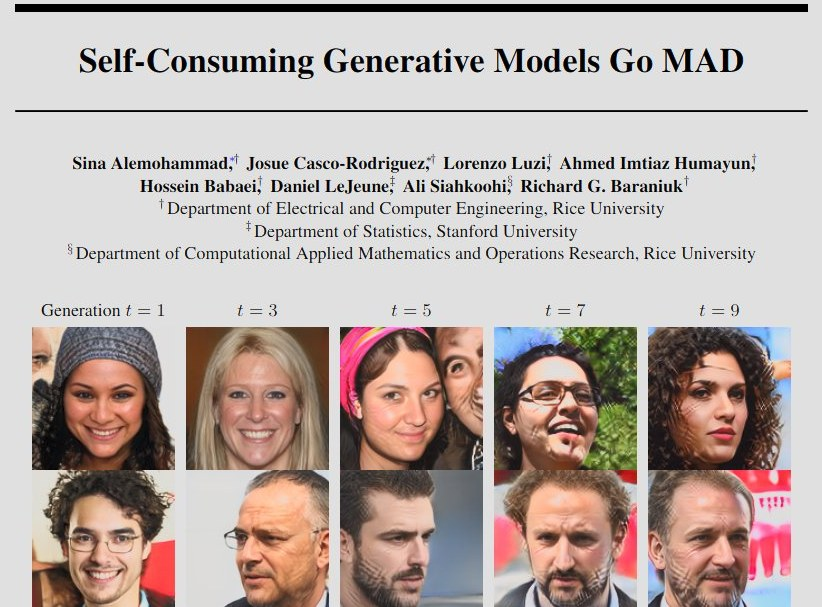
- 01Xét cho cùng, AI là kết tinh của lao động quá khứ — nó không thay thế được giá trị lao động hiện tại.
- 02Vẫn cần con người tạo ra dữ liệu mới và kiểm soát AI.
5–10 năm nữa Data Science còn “hot” ở Việt Nam và Đà Nẵng không?
“Liệu rằng 5 năm, 10 năm sau công việc liên quan đến Data Science có còn hot ở Việt Nam nói chung và Đà Nẵng nói riêng không?”
- 01Không thể nói trước được.
- 02Nhưng xu hướng chung: các ngành nghề công nghệ và công nghệ cao sẽ không bao giờ lỗi thời.
Lương các vị trí ra sao? AI thay thế một số vị trí thì nên làm gì?
“Mức lương trung bình cho các vị trí từ thấp tới cao.”
“Việc AI ngày càng phổ biến và thay thế một số vị trí của ngành thì từ bây giờ chúng ta nên làm gì?”
- 01Tuỳ công ty. Theo anh biết, mức lương khoảng:
- 02Junior 4–15 · Mid 15–25 · Senior 25–35 (triệu đồng / tháng)
AI đang được ứng dụng thế nào? Chọn hướng AI phù hợp với mình ra sao?
“AI còn khá rộng nên mình muốn biết cách nó ứng dụng trong thực tế để xem ứng dụng nào phù hợp với bản thân nhất.”
Công việc thực tế
Đi làm thật sự trông như thế nào.
Một ngày làm việc của người trong ngành trông như thế nào?
“Em muốn hiểu rõ công việc của em thực sự sẽ trông như thế nào.”
- 01Xây dựng dự án từ đầu và vận hành, maintain dự án cũ sẽ có phần khác nhau.
Một ngày làm bao nhiêu giờ? Xong sớm có được về sớm không?
“Trong một ngày nhân viên sẽ làm trung bình bao nhiêu giờ? Nếu làm xong sớm thì có được về sớm không?”
- 018 tiếng một ngày, như bình thường.
- 02Xong sớm có được về sớm không thì tuỳ công ty — nhưng xong sớm thì ngồi chơi thì có.
Kiến thức ở trường khác gì công việc ở doanh nghiệp?
“Sinh viên cần chuẩn bị gì để không bị bỡ ngỡ?”
“Em chưa thực sự hiểu doanh nghiệp cần gì để em có thể đáp ứng được ạ.”
- 01Kiến thức dùng ở doanh nghiệp ít hơn nhiều so với ở trường.
- 02Các bạn nên học vững kiến thức ở trường.
Một dự án Data/AI chạy từ đầu đến cuối như thế nào?
“Kinh nghiệm làm dự án thực tế: quy trình xây dựng một dự án Data/AI từ đầu đến cuối.”
- 01Phân tích yêu cầu khách hàng
- 02Khai thác dữ liệu
- 03… các bước tiếp theo: xem case study ở phần 01
Kiến thức cần có
Học gì, theo thứ tự nào, học ở đâu.
Cần học những gì? Bắt đầu từ đâu?
“Công việc cụ thể của role AI Engineer là gì và em nên bắt đầu xây dựng bộ kỹ năng như thế nào?”
Rất đa dạng — nhưng xoay quanh 3 mảng này.
Có cần biết nhiều ngôn ngữ lập trình không?
“Việc học ngành này có yêu cầu hiểu biết nhiều ngôn ngữ không?”
- 01Không cần — Python là đủ.
- 02Nắm vững một ngôn ngữ rồi thì học ngôn ngữ khác rất dễ.
- 03Anh học Python, sau đó bị “bắt” chuyển sang PHP, JS, C#, Dart, Kotlin, Swift… và đều học được.
Quan trọng nhất vẫn là học và luyện tập.
Học thế nào cho hiệu quả? Điều gì nên tránh?
“Chia sẻ quá trình bắt đầu học, cách học sao cho hiệu quả và những điều nên tránh.”
- 01Đi từ cơ bản lên.
- 02Đừng bỏ qua chỗ mình thấy không hợp lý.
- 03Thấy mình chưa hiểu hết thì luôn đặt câu hỏi.
Học từ đâu? Luyện tập ở đâu?
Tài liệu tốt nhất vẫn là đọc paper và đọc sách. Để bắt đầu:
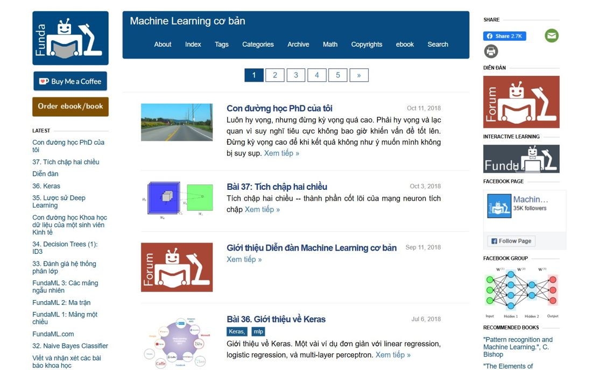
Machine Learning cơ bản↗machinelearningcoban.comSách ML bằng tiếng Việt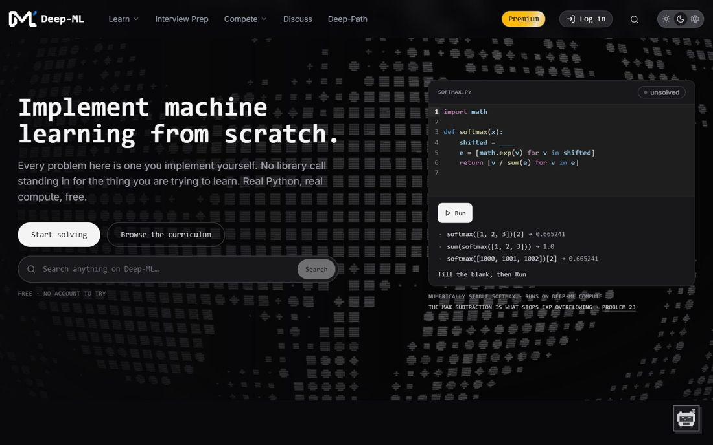
Deep-ML↗www.deep-ml.comBài tập ML từ con số 0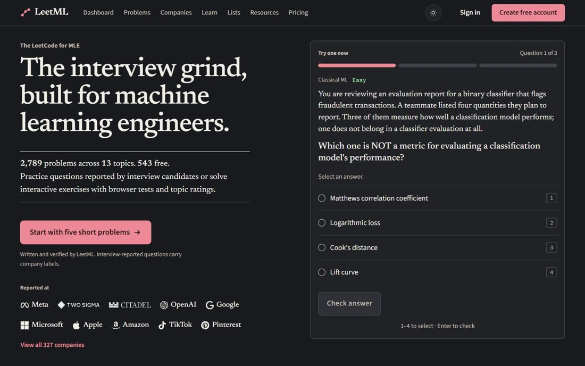
LeetML↗leetml.org“LeetCode” cho MLE / phỏng vấn AI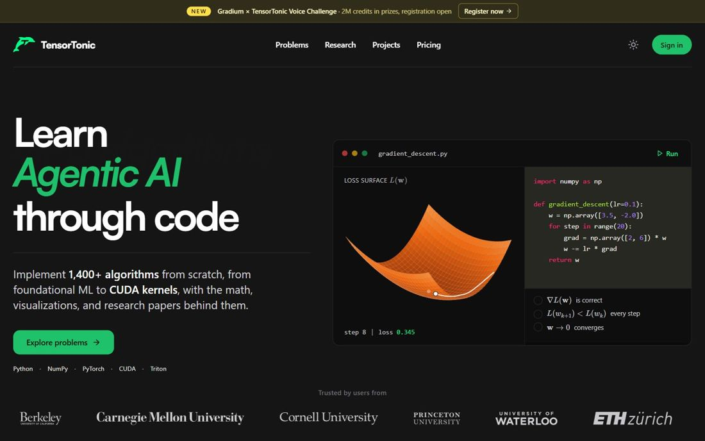
TensorTonic↗www.tensortonic.comHọc ML qua code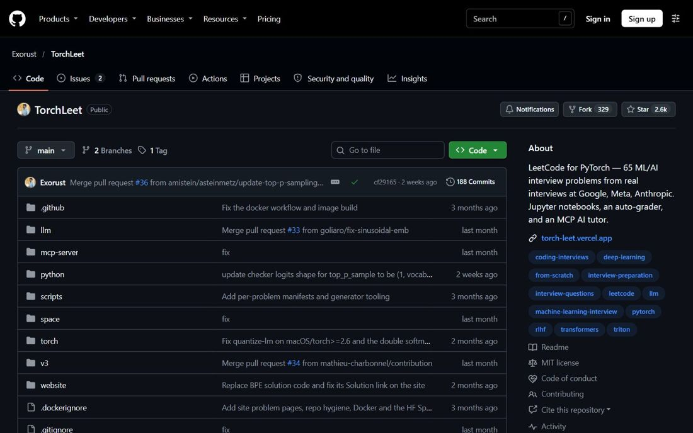
TorchLeet↗github.com/Exorust/TorchLeetBài tập PyTorchDoanh nghiệp mới là bên đang hụt hơi khi áp dụng kiến thức học thuật.
Kiến thức ở trường có đủ để đi làm không?
“Những kiến thức, kỹ năng hoặc tư duy thực chiến nào mà doanh nghiệp rất cần nhưng sinh viên thường bị thiếu hụt?”
- 01Bài toán thực tế chỉ giải được bằng kiến thức đại học hoặc học thuật bậc cao — không chỉ bằng kinh nghiệm nội bộ.
- 02Nhiều kỹ sư xem thường kiến thức đại học nên bế tắc. Ngành dữ liệu & AI thấy rõ nhất.
- 03Trước mắt: học vững lý thuyết trên lớp. Gặp bài toán thực tế rồi sẽ hiểu.
Tự xây một LLM từ đầu có khả thi không?
“Liệu việc tự mình xây dựng một mô hình ngôn ngữ lớn từ đầu mà không dựa vào bất kì mô hình có sẵn nào có khả thi hay không?”
Được — nhưng phân biệt rõ: làm để học thì dễ hơn nhiều; làm để thương mại hoá thì cần nguồn lực rất lớn.
AI thay đổi liên tục — làm sao bắt kịp?
“AI luôn không ngừng thay đổi, vậy làm sao để có thể bắt kịp được những xu hướng đó?”
- 01Đọc từ các kênh và blog: LinkedIn, Substack, Reddit.
- 02Nhưng muốn đọc hiểu thì phải có nền tảng vững trước.
- 03Nhiều thuật ngữ bị thương mại hoá mà không mang lại giá trị — cần nền tảng để phản biện và tự phản biện.
AI trong game và giải trí
“AI được áp dụng như thế nào trong lĩnh vực giải trí, như ngành game?”
Profile &
sự nghiệp
Nhà tuyển dụng cần gì, thăng tiến thế nào, sai lầm cần tránh.
Dự án, chứng chỉ, giải thưởng nào gây ấn tượng với nhà tuyển dụng?
“Nếu ai cũng có project cá nhân và một nơi thực tập thì yếu tố nào khác sẽ nổi bật trong mắt nhà tuyển dụng?”
Không có câu trả lời cố định — tuỳ công ty và dự án. Xu hướng tuyển dụng đổi liên tục:
Tập trung hiểu cái mình đang làm và học được gì — hơn là kết quả. Công nghệ đổi rất nhanh; nền tảng thì ở lại.
Làm sao để thăng tiến nhanh?
Đi làm sẽ mắc lỗi và thấy điểm yếu của mình → đó là lúc học. Có kiến thức rồi thì quay lại thực hành để mài giũa. Lặp lại.
Những sai lầm thường gặp khi mới vào ngành
“Những lỗi phổ biến mà sinh viên mới ra trường thường mắc phải trong ngành?”
Q&A
Toàn bộ câu hỏi của các bạn — xem lại kèm số trang.
18 câu hỏi của các bạn (1/2)
18 câu hỏi của các bạn (2/2)
Hỏi thẳng — không có câu hỏi nào là ngớ ngẩn.